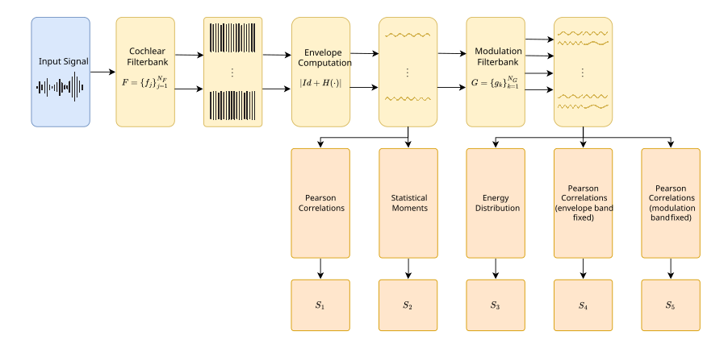
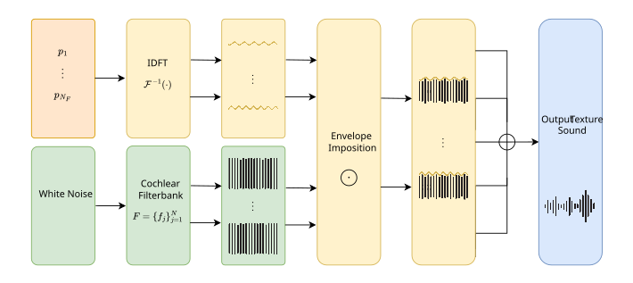

Overview
Texture sounds—such as rain, fire, wind, and bubbling water—are characterized by stochastic structure and perceptual stationarity. Unlike pitched instruments, they cannot be well described by simple spectral models, making both synthesis and evaluation challenging. This work addresses these challenges with three complementary tools.
TexStat: A Loss Function for Texture Sounds
TexStat is a differentiable loss function that compares sounds based on a revised version of the summary statistics proposed by McDermott and Simoncelli. These statistics are extracted from cochlear and modulation filterbank decompositions, capturing the perceptual properties that define a texture type without relying on temporal structure. This makes TexStat time-invariant, robust to noise, and focused on the stochastic characteristics that matter for texture perception.

Figure 1. TexStat's summary statistics extraction diagram.
Beyond its use as a training loss, TexStat summary statistics serve as a fully interpretable feature vector that can be used to build evaluation metrics. The accompanying texstat repository provides ready-to-use implementations of Fréchet Audio Distance (FAD) and Kernel Audio Distance (KAD) built on these statistics, enabling perceptually grounded model evaluation. In classification experiments, TexStat features outperformed general-purpose embeddings like VGGish across all tested texture sound categories.
TexEnv: A Differentiable Texture Synthesizer
TexEnv generates texture audio by imposing amplitude envelopes—constructed from complex parameters via the Inverse DFT—onto a subband decomposition of fixed white noise. This lightweight signal processor is fully differentiable and designed to work synergistically with TexStat, sharing the same filterbank for both synthesis and loss computation.

Figure 2. TexEnv synthesizer diagram.
TexDSP: A DDSP-Based Generative Model
TexDSP is a DDSP-inspired architecture that uses TexEnv as its synthesizer and TexStat as its sole loss function. A simple encoder network maps audio features to the parameters of TexEnv, enabling the generation of indefinitely long sequences of controllable texture sounds. Trained models stay under 25 MB, making them suitable for real-time applications.
Figure 3. TexDSP generative model architecture.
See sound examples generated with this model, including resynthesis and timbre transfer, in the following link
References
- Gutiérrez, E., Font, F., Serra, X., & Wyse, L. (2025). A statistics-driven differentiable approach for sound texture synthesis and analysis. In Proceedings of the 28th International Conference on Digital Audio Effects (DAFx 2025), Ancona, Italy.